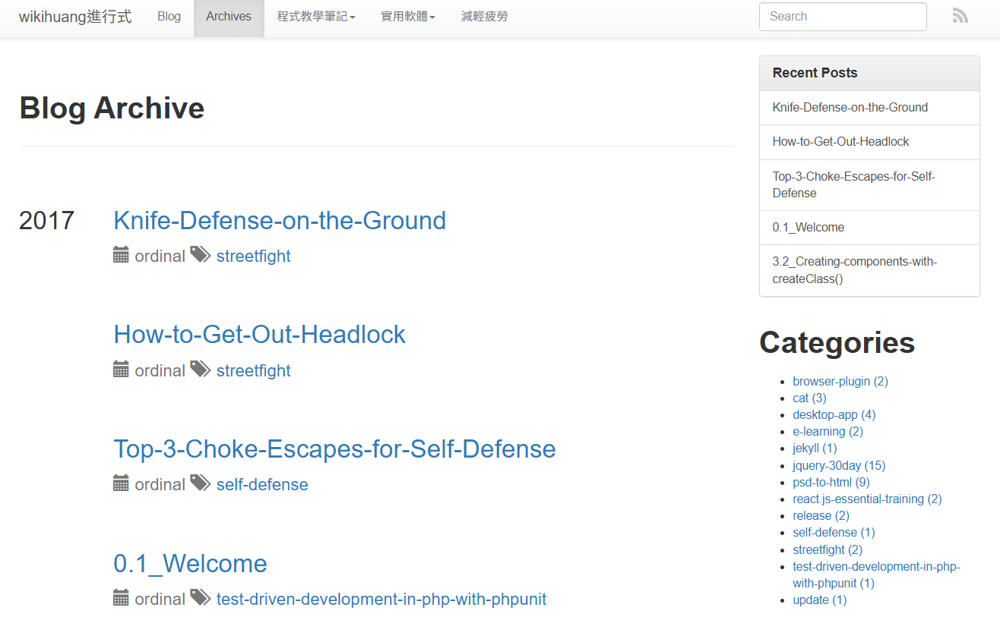

first note blog
這是第一篇關於筆記網誌的記錄，當時完成的這個版本的網誌，就是你一直希望能實現的 —— 把每次寫的文章順利接軌上傳的功能。當然，那個時候的網誌主要用來存放一些精心整理過的筆記。只不過，每一篇文章都要花很多時間做精細的整理，所以雖然文章完成後正確性很高，但時間消耗實在太久了。
其實筆記這類東西，本來就需要比較隨性地記錄，就算有錯字，也要快速寫下來，這樣才能達到每天記錄的目的。而當時做的那個網誌版本，有一個功能是記錄你每年做了什麼，比如每年有哪些文章寫得比較仔細、可以公開給別人看。它的主要特色是按年份呈現已完成的內容，旁邊還會有目錄關鍵字，透過這些就能很清楚地看到每類文章的數量、對應的關鍵字數量等等。
不過這個專案，在那之後又隔了很多年才有辦法繼續推進，畢竟當時筆記的書寫速度不快，沒辦法頻繁地更新內容。直到後來 AI 技術興起，加上語音輸入變得越來越自然，才終於有機會重新恢復這種記錄生活的方式 —— 不僅能很隨性地記錄每天的筆記、做好筆記管理，還能同步列出待辦事項，讓寫日記、記筆記重新成為日常。

2017–
Knife-Defense-on-the-Ground
ordinal streetfight
How-to-Get-Out-Headlock
ordinal streetfight
Top-3-Choke-Escapes-for-Self-Defense
ordinal self-defense
0.1_Welcome
ordinal test-driven-development-in-php-with-phpunit
3.2_Creating-components-with-createClass()
ordinal react.js-essential-training
3.3_Adding-component-properties
ordinal react.js-essential-training
Welcome to Jekyll!
2.5_building With Webpack
ordinal
2016–
單句反覆功能-找出英文不懂的句子
ordinal e-learning
Outlook的RSS功能-管理youtube教學影片
ordinal e-learning
TTS真人語音-念電子書給你聽
ordinal desktop-app
Touchcursor自訂方向鍵
ordinal desktop-app
替影片做筆記-potplayer
ordinal desktop-app
Dexpot虛擬多個桌面
ordinal desktop-app
網頁畫重點-Wired-Marker!
ordinal browser-plugin
Greasemonkey自訂護眼網頁背景
ordinal browser-plugin
3.8_圖片輪撥Slider_物件導向
ordinal jquery-30day
3.7_圖片輪撥Slider
ordinal jquery-30day
3.6_淡出和滑動特效
ordinal jquery-30day
3.5_控制動畫效果
ordinal jquery-30day
3.4_產生自製特效
ordinal jquery-30day
3.3_自訂特效速度
ordinal jquery-30day
3.2_this的應用
ordinal jquery-30day
3.1_表單特效和程式架構
ordinal jquery-30day
2.7_產生新的DOM元素插入至已存在的DOM結構內
ordinal jquery-30day
2.6_Bind、Live、Delegate事件觸發的不同
ordinal jquery-30day
2.5_Toggle事件與特效應用
ordinal jquery-30day
2.4_點選事件(click)應用
ordinal jquery-30day
2.3_基本的DOM元素選取法
ordinal jquery-30day
2.2_不是這麼快
ordinal jquery-30day
2.1_哈囉，jQuery
ordinal jquery-30day
降低螢幕亮度-讓閱讀更舒適
ordinal release
提昇工作效率-先找張能放鬆的椅子
ordinal release
3.1_Planning-an-ActivityCounter
ordinal cat
I Am Title
ordinal cat
1.1_installing
ordinal cat
07_表單樣式
ordinal psd-to-html
06_頁籤切換頁面
ordinal psd-to-html
05d_footer
ordinal psd-to-html
05c_main
ordinal psd-to-html
05b_banner
ordinal psd-to-html
05a_建構header區塊的css
ordinal psd-to-html
04_960gs
ordinal psd-to-html
03_裁切psd圖檔
ordinal psd-to-html
02_產生markup
ordinal psd-to-html

Software Developer